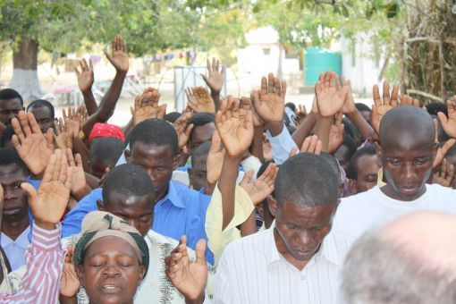
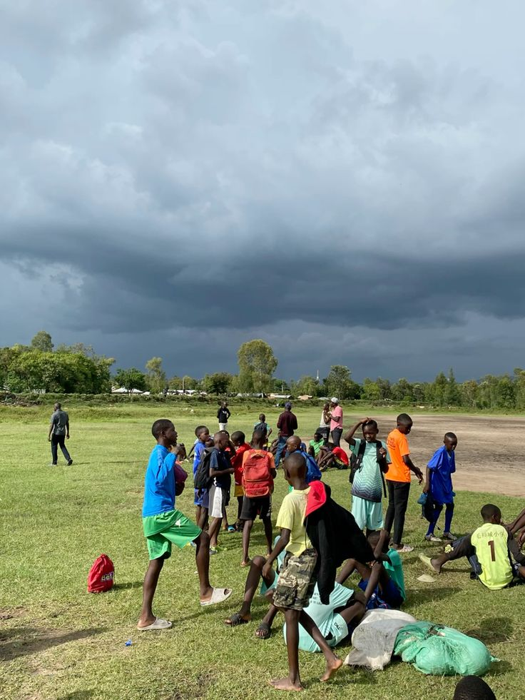
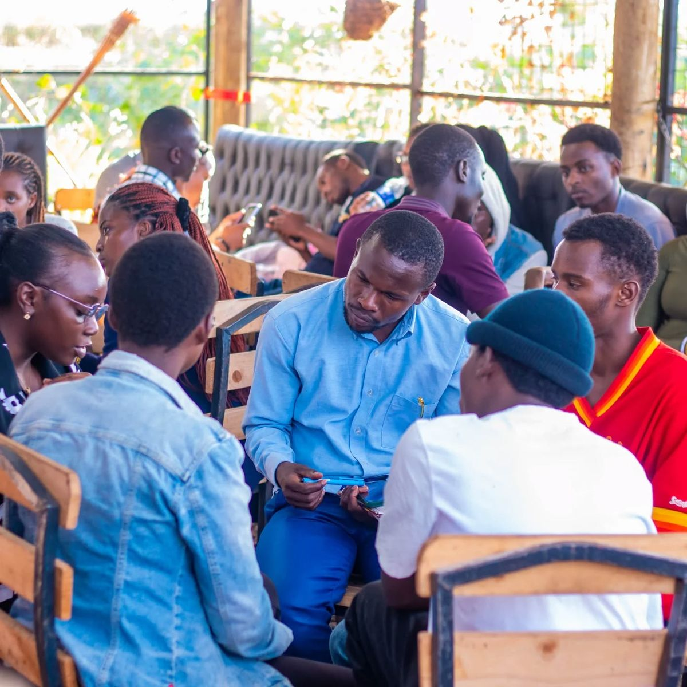
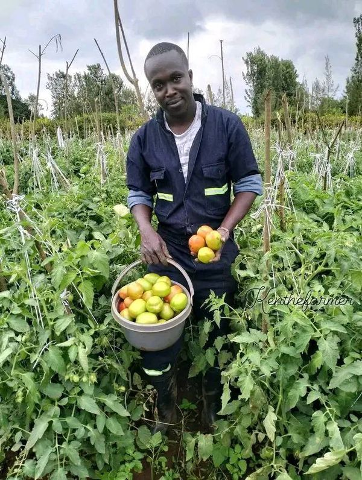
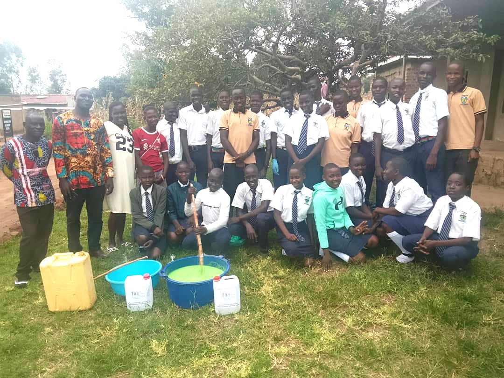
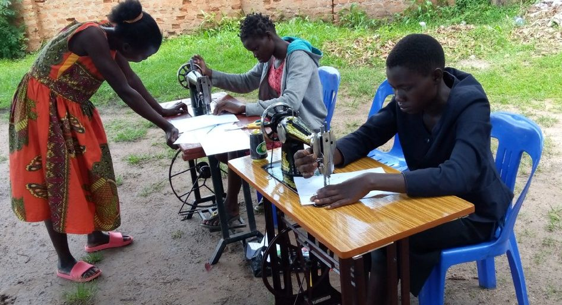

Our Programs
Holistic transformation through six strategic pillars of community development
Mission Outreach

Mission Outreach forms the spiritual backbone of Hope Revealed. We believe that lasting community transformation begins with inner hope and purpose. Through strategic partnerships with prisons and schools across Kiryandongo District, our trained chaplains and volunteers conduct regular services, Bible study sessions, and one-on-one discipleship.
Key Activities
- Weekly prison worship services reaching over 1,200 inmates monthly
- School scripture union programs in 15 partner schools
- Quarterly prison donation drives for Bibles and hygiene items
- Post-release discipleship and reintegration support
- Vacation Bible schools for children in rural communities
Impact Highlights
Since 2018, over 3,500 inmates have participated in our programs, with 400 completing foundational Bible courses. Many former participants now lead peer support groups within correctional facilities.
Sports

Sports initiatives create bridges between diverse communities and provide a healthy outlet for youth energy. Our flagship Unity Cup tournament brings together teams from different religious and ethnic backgrounds, promoting reconciliation and teamwork. Sports also serve as a powerful platform for values-based education and HIV awareness messaging.
Key Activities
- Annual Unity Cup tournament with 20+ participating teams
- Weekly community football and netball leagues
- Sports equipment lending library for schools
- Coach training in child protection and first aid
- Faith-based halftime messages and mentorship sessions
Community Impact
Over 500 youth participate regularly in our sports activities. The Unity Cup has become a signature event drawing over 2,000 spectators annually. We have seen reduction in idle time related conflicts among participating youth.
Health and Counselling

Health and Counselling services address both physical and emotional wellbeing. We work closely with local health centers to provide holistic care for people living with HIV, chronic illnesses, and those facing mental health challenges. Our trained counsellors offer a safe, confidential space for individuals and families.
Key Activities
- Quarterly free HIV testing and wellness camps
- Individual and group counselling sessions by appointment
- Home-based care visits for chronically ill individuals
- Nutrition education for people living with HIV
- Mental health first aid training for community leaders
- Referral network with district health facilities
Reach and Outcomes
Our quarterly testing events screen over 300 individuals per session. We currently provide ongoing counselling support to 150 clients. Treatment adherence among our enrolled clients has shown significant improvement through our follow-up system.
Agriculture

Agriculture program tackles food insecurity and poverty through practical training in climate-smart farming methods. Many families in our region depend on subsistence farming, yet lack access to improved seeds, techniques, and market information. Our demonstration farms serve as living classrooms where farmers learn by doing.
Key Activities
- Hands-on training in crop rotation, intercropping, and soil conservation
- Demonstration farms showcasing high-yield vegetable and grain production
- Poultry and small livestock management workshops
- Seed and tool distribution for graduated farmers
- Farmer cooperative formation and collective marketing support
- Post-harvest handling and storage techniques
Measurable Impact
Over 200 households have completed our 6-month training cycle. Participants report average yield increases of 40 percent. Three demonstration farms are fully operational and serve as community learning sites.
Livelihood

Livelihood program equips individuals with practical skills and resources to generate sustainable income. Many families struggle to break the cycle of poverty due to lack of marketable skills. We offer vocational tracks alongside small business training and startup support for graduating participants.
Vocational Tracks
- Tailoring and Fashion Design: 6-month course covering sewing, pattern making, and small business management
- Carpentry and Joinery: Furniture making, repair skills, and tool maintenance
- Small Business Management: Record keeping, pricing, customer relations, and savings groups
- Food Processing: Value addition for local crops, safe preservation methods
Success Outcomes
To date, 85 graduates have started their own small enterprises. Our revolving loan fund has supported 40 micro-businesses with startup capital. Many graduates now employ others in their communities.
Capacity Building

Capacity Building program strengthens local leaders, pastors, and community organization boards. Effective leadership is essential for sustainable community development. We provide training in governance, financial management, project planning, and ministry leadership to equip change-makers with professional skills.
Training Modules
- Leadership and Governance: Board roles, strategic planning, ethical leadership
- Financial Management for Nonprofits: Budgeting, internal controls, donor reporting
- Ministry and Pastoral Development: Sermon preparation, pastoral counselling, conflict resolution
- Project Management: Proposal writing, monitoring and evaluation, community mobilization
- Advocacy and Community Rights: Understanding local governance structures, citizen engagement
Program Scale
We host two major leadership summits each year, each training 50 to 70 participants. Ongoing mentorship is provided to alumni through quarterly peer learning meetings. Many graduates have gone on to serve on local school boards, health committees, and cooperative leadership.